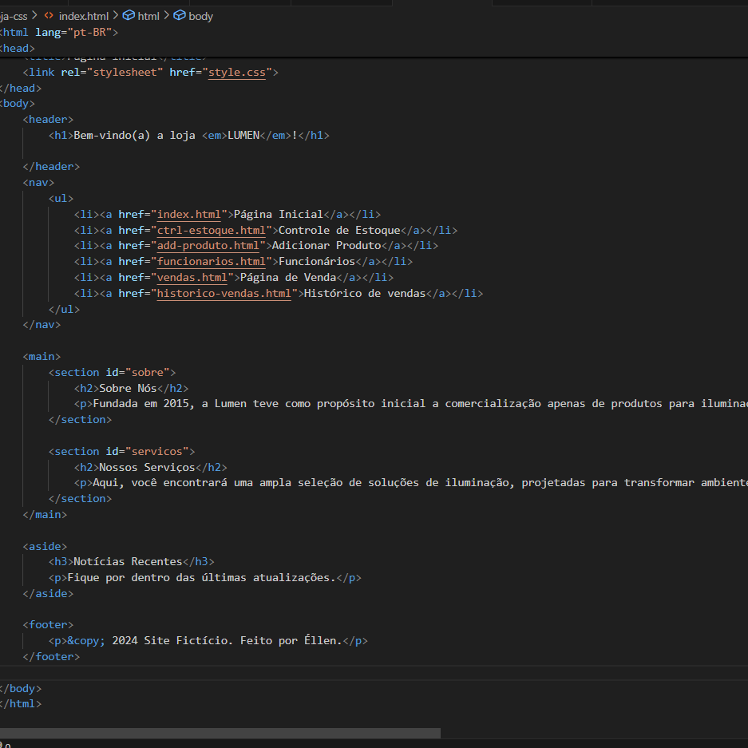
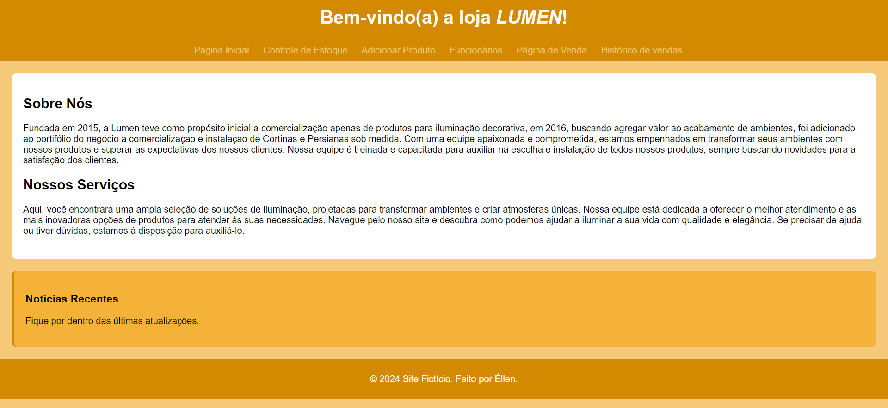

Código da capa da loja:

Capa da loja:

Descrição:
Este projeto consiste em um sistema para uma loja de lustres e iluminação, a Lumen, O objetivo foi criar uma plataforma funcional com informações sobre a loja e funcionários, controle de estoque, produtos, vendas e histórico de vendas, utilizando HTML e CSS.